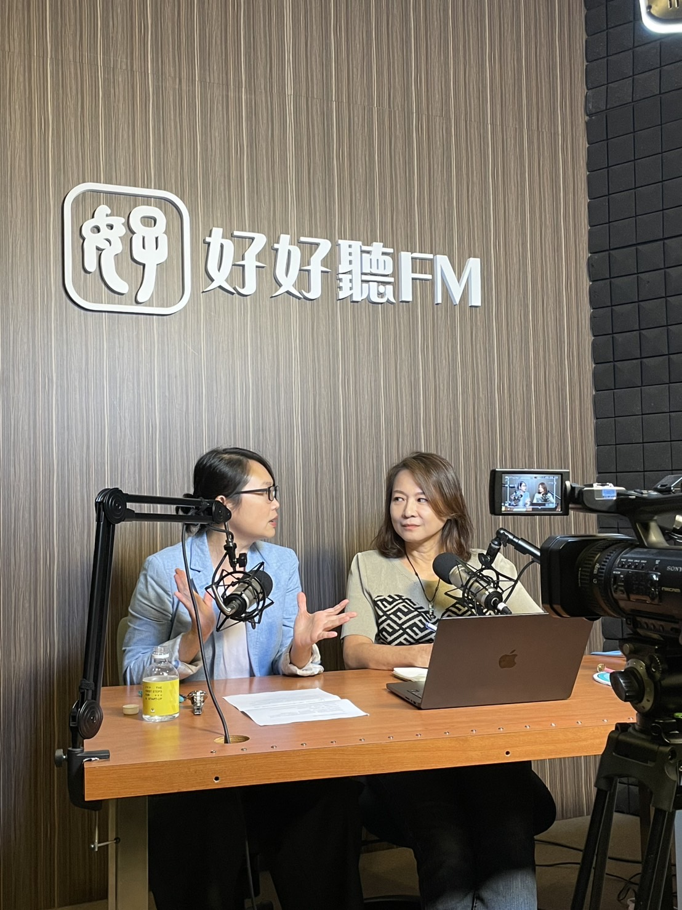

PROPOSAL
江宜汾短讲与工作坊合作提案
以前新闻主播的现场判断、采访提问与公共叙事能力为基础，设计面向家长、职场成人与女性成长社群的内在觉察、表达沟通与未来教育课程。

FEATURED WORKSHOP
Emotional Agility 情绪敏捷力工作坊
POSITIONING
ARC内在转化工作坊
本提案提供一组可单场执行、也可设计为三场系列的短讲或工作坊。内容回应中国大陆中产上班族常见的三种需求：家长面对孩子教育与未来的焦虑，职场人面对高压、耗竭与转型的不安，以及女性在家庭、职场、关系与自我之间的拉扯。
三场工作坊可共用系列名称「ARC × RECODE 内在转化工作坊」。核心是协助参与者看见自己如何被旧模式推著走，辨识情绪反应、内在需要、核心恐惧、内在剧本与信念，进而重新拿回选择的自由。
THEMES
主题架构与演讲或工作坊题目
亲子／家长
教育焦虑与亲子陪伴
协助家长从孩子的行为与自己的情绪反应出发，看见背后的内在需要、核心恐惧与内在剧本，从控制、焦虑或说教，走向更有选择的亲子互动。我们都希望孩子赢，父母该怎么陪
从竞争、升学与未来焦虑切入，谈父母如何从替孩子安排，转向支持孩子长出能力，结合未来趋势与 ARC 觉察。孩子真正让你生气的，往往不是他做错了什么
从亲子冲突切入，带家长看见自己的情绪、内在需要、恐惧与内在剧本，理解为什么爱常常会变成控制。未来越不确定，父母越需要学会放手吗
从 AI、教育变动与不确定感切入，讨论放手不是不管，而是如何建立信任、界线与支持，让孩子具备自主、选择与承担的能力。一般成人／自我成长与沟通
职场压力与内在更新
帮助参与者辨识生活与关系中反复出现的情绪、反应与选择模式，理解自己为什么总是以某种方式回应，重新取得选择的自由。高压职场人的自我更新 从耗竭到有方向感
回应内卷、倦怠、年龄焦虑、转型与人生下半场的不安，帮助参与者辨识反复出现的情绪与选择模式。活得更清楚 看见真正影响你选择的内在力量
从生活与关系中反复出现的反应模式切入，带参与者看见内在需要、恐惧、剧本与信念，重新取得选择的自由。不再被情绪推著走 成人关系里的觉察与沟通练习
适合想改善职场、人际与亲密关系的成人，练习辨识情绪背后的讯息，从防卫、逃避或讨好回到清楚表达。女性自我觉醒
角色期待与自我选择
陪伴女性看见长期扮演角色、满足期待与压抑自身需要背后的内在剧本，重新整理价值与信念，从外在期待回到内在支持。从优秀到自在 现代女性的身份重整与自我成长
回应女性在职场、家庭、亲密关系、母职与自我之间的拉扯，重新整理价值与选择。你现在过的人生 真的是你自己选的吗
陪伴女性看见长期扮演角色、满足期待与压抑需要背后的内在剧本，从外在期待回到内在支持。停止内耗的温柔练习 女性如何重整关系与自我界线
从关系拉扯、责任感与自我怀疑切入，协助女性辨识「我应该」「我不能」「我只能」如何影响人生选择。SPEAKER
讲者简介
江宜汾是前台湾中视新闻主播，曾任中国电视公司新闻部主播、专题组与财经组组长、文字记者，并担任「小资赚大钱」「进击大未来」节目制作人与主持人。新闻现场训练她在庞杂资讯中抓出重点、追问脉络、转译观点，也让她熟悉如何面向不同受众进行清楚而可信的公共沟通。
离开新闻与媒体产业后，她持续把采访、叙事与沟通能力带入教育现场。现为 1221 未来教育发展协会创会理事长，主持与制作教育 Podcast「无边界学习」，累积超过 100 集教育对话，并创办泰拉学校，陪伴大学生在真实世界中看见自己、理解他人，形成可行动的学习方向。
Podcast
无边界学习
与好好听共同制作，累积超过 100 集的教育对话。从教室、家庭到未来社会，透过访谈与思辨，让更多人看见学习可以发生的不同方式。



BACKGROUND
证照与学经历
Certifications
专业证照与引导资格
以情绪觉察、全脑思维、芳疗、永续与身心觉察等跨域训练为基础，转化为亲子、教育与成人成长工作坊中的引导方法。
- Emotional Agility Certified Facilitator情绪灵敏力认证引导师
- Emergenetics Certified Youth Facilitator全脑思维偏好青少年认证引导师
- Emotional Aromatherapy Practitioner情绪芳疗师认证
- Industrial Sustainability ESG Advanced Strategy Class产业永续 ESG 高阶策略班
- Social Innovation Sustainable Management Incubation Program社会创新永续经营管理孵化班
- Access Bars PractitionerAccess Bars 执行师
- Usui Reiki First Degree臼井灵气一阶
- PerFume Class Certificate调香课程结业证书 / Korea Design Craft Association

情绪灵敏力认证引导师

全脑思维偏好青少年认证引导师
Resume Highlights
学经历重点
- 新闻主播、节目制作人与活动主持，累积公共表达、提问设计与现场掌握能力。
- 大学兼任讲师、实验教育教师与未来教育倡议者，长期投入教育现场与青年陪伴。
- 从媒体、品牌行销、餐饮创业到非营利组织，形成跨界整合与观点转译能力。
- Oxford Brookes University MA in Electronic Media；国立政治大学外交学系。


VALUE
主播经历如何转化为课程价值
现场判断
新闻工作要求在有限时间内掌握重点，课程会把这项能力转化为面对复杂资讯时的整理与判断方法。
采访提问
从如何问出关键问题开始，带领学员练习观察、追问、倾听与重新组织讯息。
公共叙事
主播与主持经验让表达不只追求流畅，更重视可信度、结构与受众理解。
跨界转译
从新闻、整合行销、餐饮创业到教育倡议，形成能与家庭、企业与公益组织对话的跨界语言。
NEXT STEP
可依主办方对象调整成单场短讲或系列工作坊。
若主办方以家长为主要对象，建议聚焦教育焦虑、亲子冲突与未来能力；若以企业或城市上班族为主要对象，建议聚焦高压职场、耗竭与人生方向感；若以女性社群为主要对象，建议聚焦角色期待、关系拉扯与自我选择。